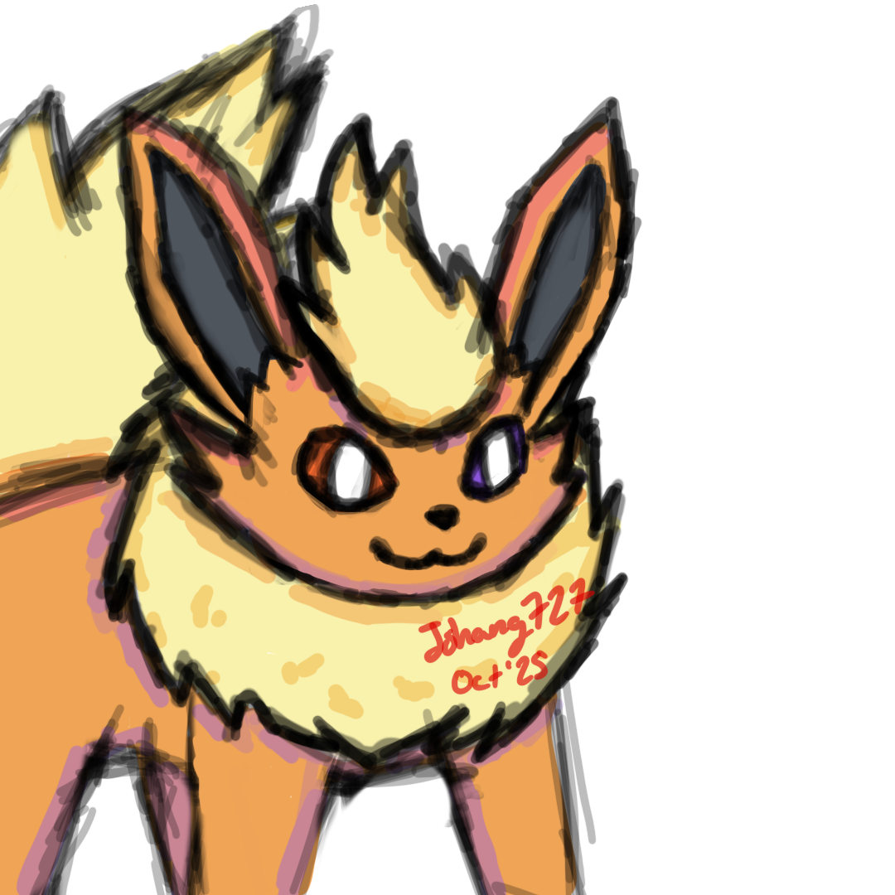
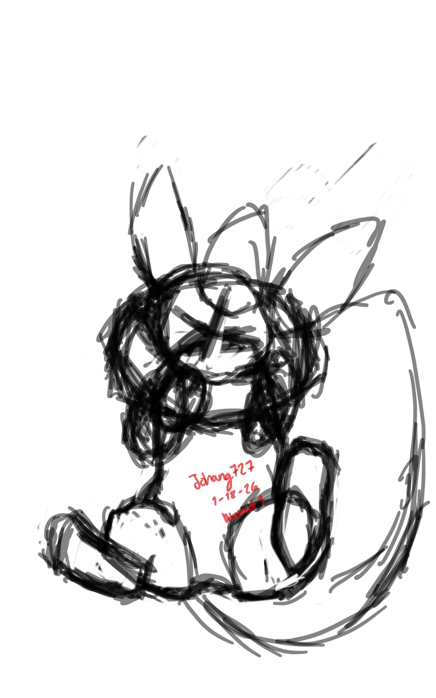
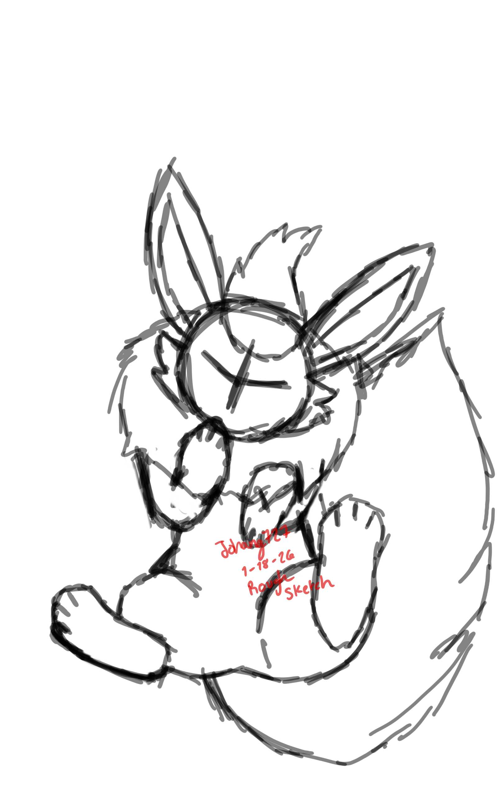
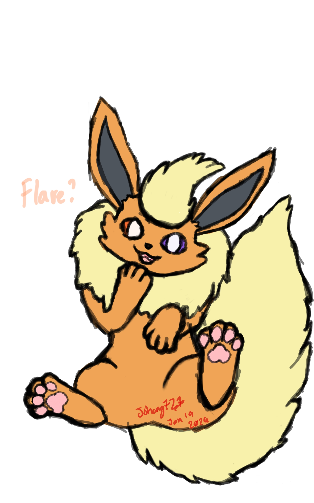

[January 22, 2026]
Drawing is fun, its a nice to see your art to completion. However, I struggle with getting past the sketching phase
Regardless, I like flareons a bunch, so I decided to draw a few regardless. Only by the end of last year, only am I confident enough to say that my art is decent. I think I will look at these drawings in the future and probably think the same in the future.
Sometime in October 2025, I finished this:

Tbh, I still somewhat like this one, but there are plenty of improvements. The tail is.. a bit wonky and I don't think it's long enough, but not very visible in a profile picture and well, that's the reason this exists.
As you can see though, I could never get out of the sketchy phase.
I wanted to draw a full body next, therefore I decided to draw him on his back.
This time, I actually have the in-between phases. As dumb as it sounds, I only just realized that starting with a really abstract sketch is a good way of getting started. One of the main reasons I don't really draw often was because I always skipped the "abstract" step and got unmotivated because I couldn't draw it xdd

But yeah, starting with this phase... the rest of the drawing made a lot more sense. I did the rough sketch the same day, since a lot of features could get lost in abstraction.

Here you can see the vision a lot clearer, but it's quite rough around the edges. I took a break from it and came back a few days later, because I personally think it helps me find flaws and things I can improve easier.

And here's a colored sketch. It still needs shading, but I just wanted to see how he would look colored. To be honest though... I feel like this is good enough to use as a picture for a reference sheet. I would need a standing image to complete it fully, but yeah, it's good as an alt.
I've drawn other sketches where his paws were in frame, but they are quite old and really bad looking haha. I've always drawn 3 toes on each paw, but decided to be experimental and draw four this time. I personally think it looks better, even if the default flareon from the PKMN Company only has 3.
I also decided to draw tufts of fluff on his cheeks since I thought they looked cute and made him look a bit fluffier.
His left eye is purple and his right eye is orange. Originally, they were both orange, but after just randomly thinking about it, I said, meh, Heterochromia is pretty cool and went with it :p
Anyways, flareon best Pokémon.